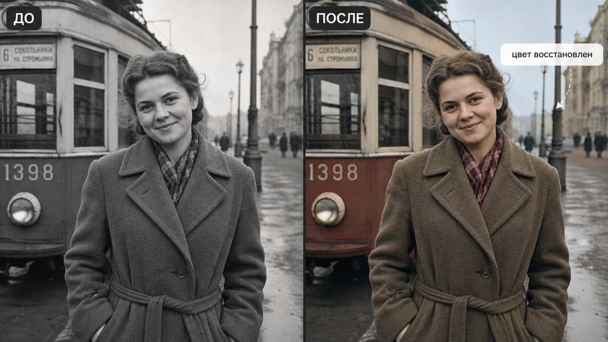

Промтзилла
Колоризация работает лучше, когда ИИ не просто «делает цветным», а подбирает умеренные исторически правдоподобные оттенки.

Пошаговая инструкция
- 1Отсканируй или сфотографируй чёрно-белый снимок без бликов и сильных теней.
- 2Загрузи фото в инструмент редактирования фото онлайн.
- 3Вставь промт и попроси сохранить зерно, лица и атмосферу снимка.
- 4Если известны реальные цвета одежды, глаз или места, добавь их в запрос.
- 5Проверь кожу, волосы и фон: самые частые ошибки колоризации видны именно там.
Пример результата
На обложке показан сценарий до/после: исходное фото и результат, который можно получить через инструмент редактирования фото онлайн.
Промт
RU
Раскрась чёрно-белую фотографию естественно и аккуратно. Важно: — сохрани лица, возраст, мимику, одежду, позы и фон без изменения; — добавь реалистичные цвета кожи, волос, одежды, архитектуры, неба и предметов; — используй умеренную насыщенность, без кислотных оттенков; — сохрани фактуру старого снимка, зерно и историческую атмосферу; — не делай кожу пластиковой и не превращай фото в современную постановочную съёмку; — если цвет нельзя определить точно, выбирай нейтральный вероятный вариант. Если видишь спорные зоны, перечисли их отдельно после обработки.
EN
Colorize the black-and-white photograph naturally and carefully. Important: — preserve faces, age, expressions, clothing, poses, and background unchanged; — add realistic colors for skin, hair, clothing, architecture, sky, and objects; — use moderate saturation, no acidic colors; — preserve the texture, grain, and historical atmosphere of the old photo; — do not make skin plastic and do not turn the image into a modern staged photoshoot; — if a color cannot be determined precisely, choose a neutral plausible version. If there are uncertain areas, list them separately after processing.
Важно
Цвета в старых фото часто являются предположением. Если важна семейная или историческая точность, добавляй известные факты в промт.
Теги